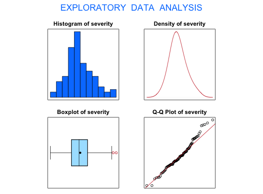

Data for Exercise 6.97
Earthqk
A data frame with 100 observations on the following two variables.
Kitchens, L. J. (2003) Basic Statistics and Data Analysis. Duxbury
str(Earthqk)#> 'data.frame': 100 obs. of 2 variables: #> $ year : int 1770 1771 1772 1773 1774 1775 1776 1777 1778 1779 ... #> $ severity: int 66 62 66 197 63 0 121 0 113 27 ... #>#> [1] "Earthqk$severity" #>#> Size (n) Missing Minimum 1st Qu Mean Median TrMean 3rd Qu #> 100.000 0.000 0.000 69.250 97.970 94.000 96.700 122.000 #> Max. Stdev. Var. SE Mean I.Q.R. Range Kurtosis Skewness #> 216.000 44.704 1998.413 4.470 52.750 216.000 0.067 0.431 #> SW p-val #> 0.082 #>t.test(Earthqk$severity, mu = 100, alternative = "greater")#> #> One Sample t-test #> #> data: Earthqk$severity #> t = -0.4541, df = 99, p-value = 0.6746 #> alternative hypothesis: true mean is greater than 100 #> 95 percent confidence interval: #> 90.54745 Inf #> sample estimates: #> mean of x #> 97.97 #> #>